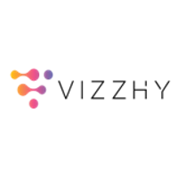
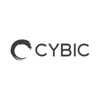
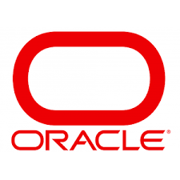
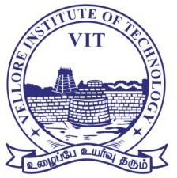

|
Anuj Pai Raikar I'm a AI ML Engineer at Vizzhy, where I am working on developing a LLM driven application ingesting multi-modal data (audio, text, images) to deliver personalized health analytics to the users. My main area of expertize is Robotics and Autonomy, I have worked on developing precise docking solutions for AMR's at JLG Industries - Oshkosh and developed the ML stack for the security robot at DEKA. I have completed my Masters in Robotics at Worcester Polytechnic Institute where I worked at the Manipulation and Environmental Robotics Lab under Prof. Berk Cali. |

|
|
 |
 |

|
 |
 |
||
|
AI ML Engineer Vizzhy Jul 2025 - Present |
Machine Learning Intern Cybic Tech Feb 2025 - Jul 2025 |
Autonomy Intern JLG Industries May 2024 - Aug 2024 |
Machine Learning Intern - Perception DEKA May 2022 - Aug 2023 |
Masters in Robotics Engineering WPI 2022-2024 |
Associate Consultant Oracle Aug 2020 - Feb 2022 |
B.Tech Mechanical Engineering VIT 2016-2020 |